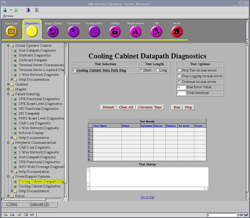

Operating Documentation
Direction 5500113, Rev# 3
Discovery MR450 1.5T Service Methods
Module Version 3.0, Version Date 8/19/08
Operating Documentation |
Diagnostics >> System Function >> Power Support Systems >> Cooling Cabinet Datapath Diagnostics
Diagnostics >> Hardware Location >> Heat Exchange Cabinet >> Cooling Cabinet Datapath Diagnostics
Illustration 1: Cooling Cabinet Datapath Diagnostics

The Cooling Cabinet Datapath Diagnostic tests the Ethernet communication link between the SCP and the PLC in the Heat Exchanger Cabinet (HEC).
This diagnostic will send a random data pattern to the PLC. If the data read doesn't match the data written the datapath diagnostic will fail.
Ethernet cable between SCP and PLC
None
Click [Run].
View results in the table below.
Output values are judged pass or fail. In the event of failure, the details of the failure can be found in the GE System Log.